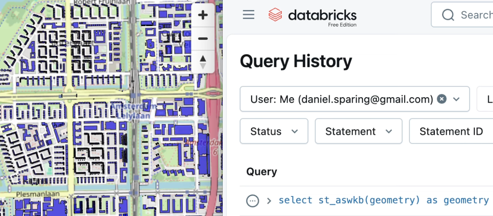

OVERTUREMAPS_RELEASE = "2025-10-22.0"
COUNTRY_CODE = "NL"
country_bbox = (
spark.read.parquet(
f"s3://overturemaps-us-west-2/release/{OVERTUREMAPS_RELEASE}/theme=divisions/type=division_area"
)
.where(f"subtype = 'country' and class = 'land' and country = '{COUNTRY_CODE}'")
.select("bbox.*")
.toPandas()
.iloc[0]
)Scalable visualization with DuckDB Spatial MVT
(click on the above image to play the video.)

We have MVT support in DuckDB Spatial since version 1.4. This means that we can feed MVT to e.g. MapLibreGL JS, as shown by DuckDB Spatial author Max Gabrielsson here in an example Flask app.
(Another nice tool to consume DuckDB MVT’s would be Martin, this is tracked in this issue.)
But how do we efficiently generate MVT’s from a Delta Lake table containing a GEOMETRY, given the tile indices?
The key thing to consider is that now Databricks has very efficient spatial join filtering via e.g. ST_Intersect, especially if what you are filtering for is a constant. So the following query can be sub-second for e.g. a billion polygons such as Overture Maps buildings (note that we are not using any spatial grid or bounding box filters anymore):
select
geometry
from
t
where
st_intersects(
geometry,
st_geomfromtext(
'POLYGON ((5.44921875 52.160454557747045, 5.44921875 52.2143386082582, 5.537109374999999 52.2143386082582, 5.537109374999999 52.160454557747045, 5.44921875 52.160454557747045))'
)
)
limit 30000
Note
For this to work fast, the geometry really has to be GEOMETRY (or probably GEOGRAPHY) type, and not WKB, which latter is still the case as of writing for the CARTO-provided tables such as carto_overture_maps_buildings.carto.building.
Create a sample table
We create here a sample table of buildings in the Netherlands – the same worked for me also for all 2.5B Overture Maps buildings of the world, but if you tried to persist that table, you’d probably run against the daily usage limit of Databricks Free Edition as I did.
from pyspark.sql import functions as F
spark.read.parquet(
f"s3://overturemaps-us-west-2/release/{OVERTUREMAPS_RELEASE}/theme=buildings/type=building"
).where(
f"""bbox.xmin < {country_bbox["xmax"]}
and bbox.xmax > {country_bbox["xmin"]}
and bbox.ymin < {country_bbox["ymax"]}
and bbox.ymax > {country_bbox["ymin"]}
"""
).withColumn("geometry", F.expr("st_geomfromwkb(geometry)")).write.mode(
"overwrite"
).saveAsTable("workspace.default.building_geom")Now we can build on Maxxen’s gist, with the following adjustments:
- We keep DuckDB doing the MVT generation incl. the preprocessing of calculating the ST_TileEnvelope for the tiles needed for the current viewport, but of course we need Databricks SQL to actually spatial filter our Delta Table (DuckDB delta_scan currently does not read GEOMETRY data types.)
- An alternative approach could be to wrap the used DuckDB functions into Spark UDF’s, if we wanted to move some compute from your browser to DBSQL.
- For DBSQL we use the Python
databricks-sql-connector, authenticating with a Personal Access Token – for serious work, you’d want to use OAuth instead. - Graceful feature limit. What to do if a tile has too many features? A common solution would be to define a minimum zoom level, but this would make it very cumbersome to move around the map, so we define a
MAX_FEATURES_PER_TILEinstead. If this is reached, we gracefully fail and only show the tile boundaries – the user would only need to further zoom in to reveal all the features within that viewport. (Of course you can throttle this value as you wish to find a balance between loading time and number of features shown.) - MVT expects SRID 3857, while our table is probably in another SRID, so we need to use some
st_transformthere and back. - Tile throttling. we also added JS code under
// === Tile throttling logic ===to take a 2 second pause starting any zoom and move interaction, in order to avoid overloading the warehouse with tile requests and therefore avoid tile queueing.- Note that in the current implementation this means that during zooming and moving the map, the feature layer is temporarily not visible – this probably could be improved. For example, without tile throttling, the objects would remain visible during zoom/pan, but we would need to wait much longer for the results after a big move.
In the below video (showing a table with all 2.5B buildings worldwide, not just one country), you can see the tiling at work – note how 1) the graceful feature limit means that “too busy” tiles are just shown as rectangles, and 2) zoom-and-pan pauses the feature layer but after a short timeout, the tiles are drawn, with sub-second latency per tile.
Find the full code here, which you can run locally as a Flask app (you could also embed it within a Databricks App if preferred, but the local app is of course a bit more cost-effective).

(click on the above image to play the video.)
Note
If you still find this approach too “slow” from the end-user standpoint, and/or you find it “cheating” that we use MAX_FEATURES_PER_TILE, then you can use PMTiles instead. The difference is that with the MVT approach, you directly read the Delta Lake table, and the PMTile you would need to generate which means extra compute and time.